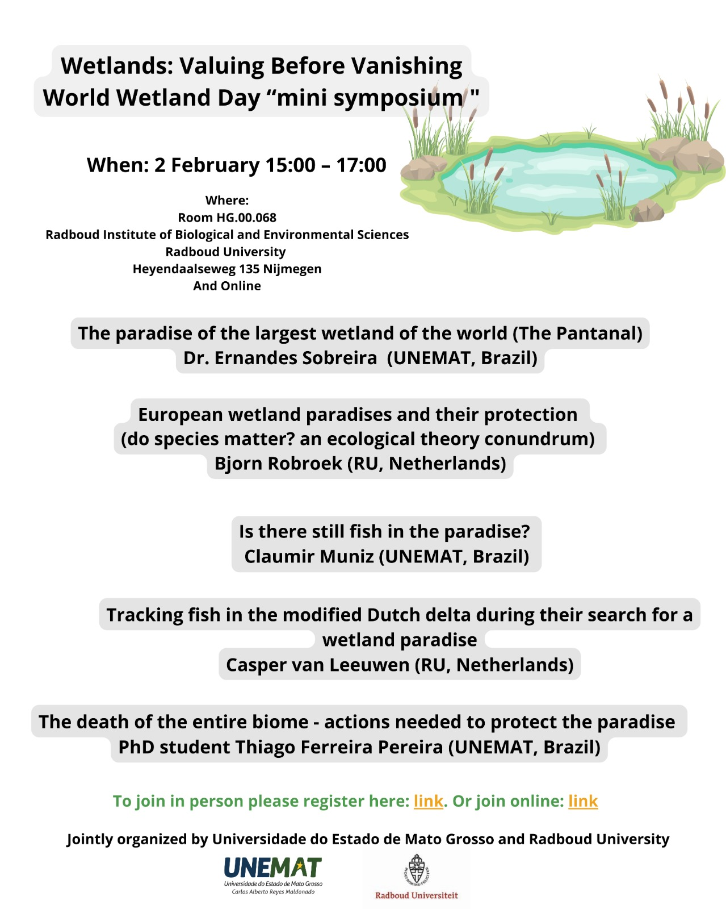
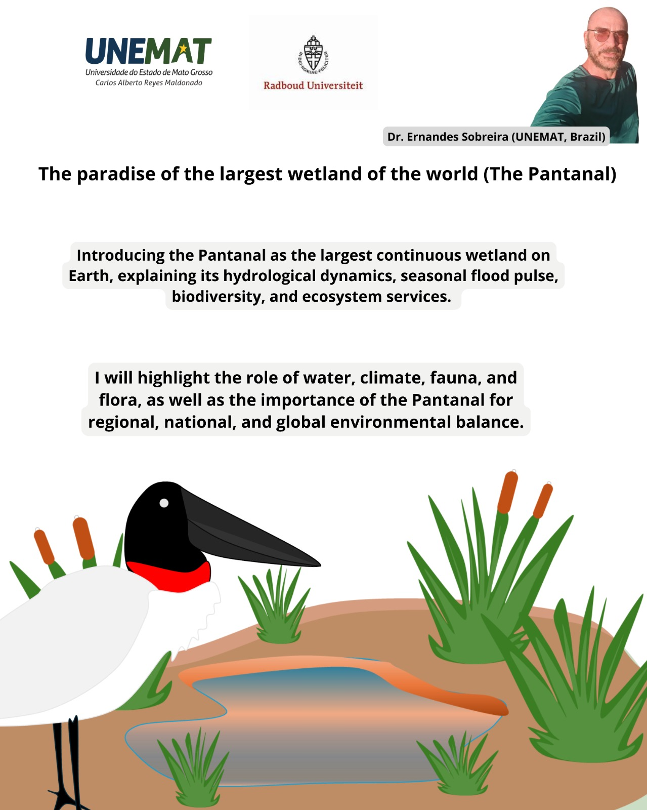
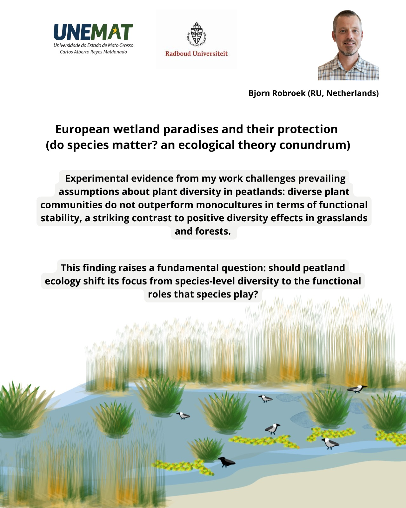
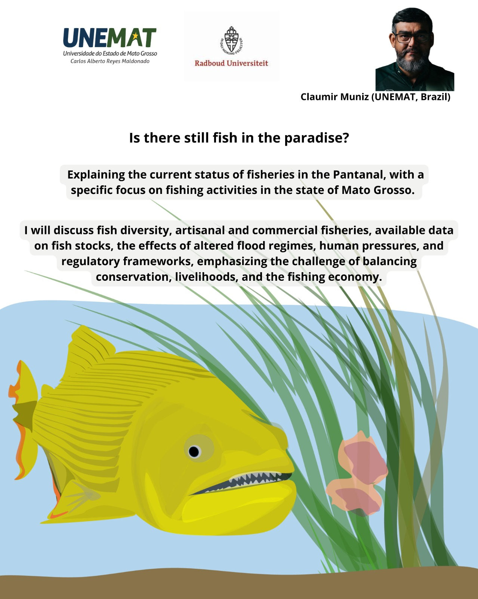
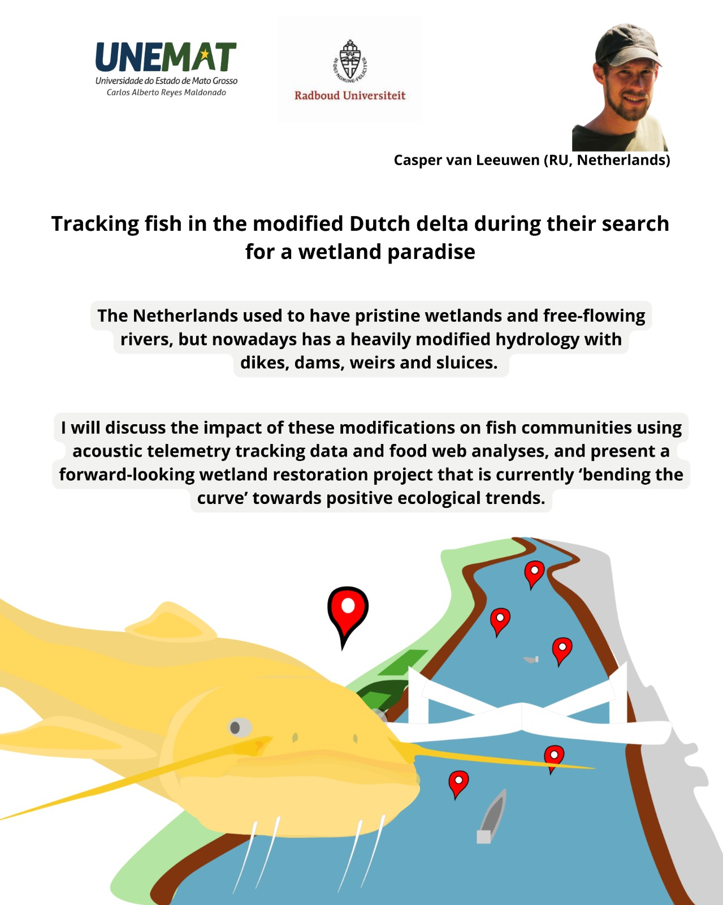
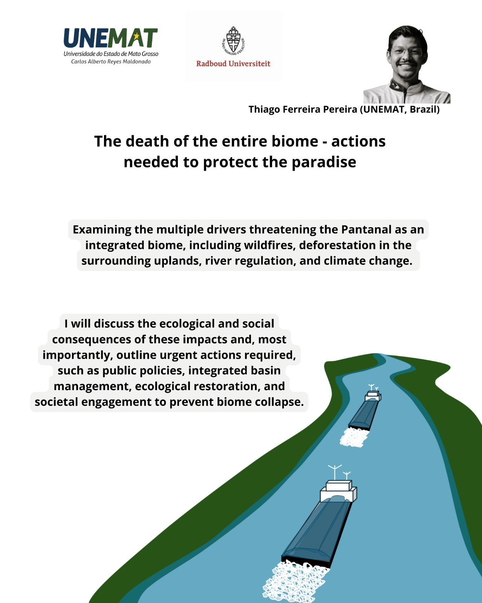

📚 Classes & Recorded Lectures
Short courses, recorded lectures, and workshop material.
Here you can include topics like fire ecology, aquatic systems, climate change in the Pantanal,
statistics for environmental science, geoprocessing in R, and restoration practices.
SAVE THE DATE · INTERNATIONAL EVENT
🌍 International Wetlands Day 2026
Join us in Nijmegen to celebrate wetlands as living systems essential for
climate regulation, biodiversity, and human well-being.
A day of science, dialogue, and collaboration bringing together students,
researchers, and the wider community.
Video lecture
Fire, ash, and water quality in tropical wetlands
Placeholder for embedded YouTube/Vimeo link. Students explain how wildfire ash
affects water chemistry, plankton communities, and CO₂ fluxes.
Mini-course
Applied Statistics to Environmental Sciences
PDF slides + recorded session. Intro to experimental design,
basic modeling, and interpretation of ecological data.
Workshop
Introduction to Geoprocessing and Mapping in R
Code examples and step-by-step demos for spatial data analysis.
This block will host .R scripts and screen-capture tutorials.
Field school
Climate Change and Environmental Consequences
Lecture notes and field activities comparing European peatlands under fire pressure
and Pantanal floodplains under drought and burning.
🎤 Events & Calls
Mini-symposia, workshops, and open calls for participation. Click a poster to open it in full size.
MINI SYMPOSIUM · CALL FOR PARTICIPATION
🌿 Join our Mini Symposium
Choose how you would like to participate and share the invitation posters with your network.






🧠 Interactive Science Quiz
3–5 minutes. Real ecosystem science. Instant feedback. Share it with your network.
Loading…
✅ Finished! Your result:
Tip: you can restart or shuffle and try again.
📄 Publications & Reading
Open-access articles, reports, and student theses related to fire ecology,
aquatic systems, ash deposition, restoration, and socio-environmental resilience.
Resources, Conservation & Recycling · 2025
Low carbon footprint of Nile tilapia farming with recirculation aquaculture.
Focus: aquaculture sustainability and carbon footprint.
📷 Field Gallery
Photos from field campaigns, lab work, community outreach, and more.
Pantanal · Brazil
Community environmental workshop
Students leading outreach activities with local schools and riverside families.
🌎 About ECO³
Who we are, what we are building, and how people can participate.
ECO³ (Ecology, Collaboration, Open Education Group) is an open learning platform created by Radboud University (The Netherlands), UFJF (Brazil), and UNEMAT (Brazil).